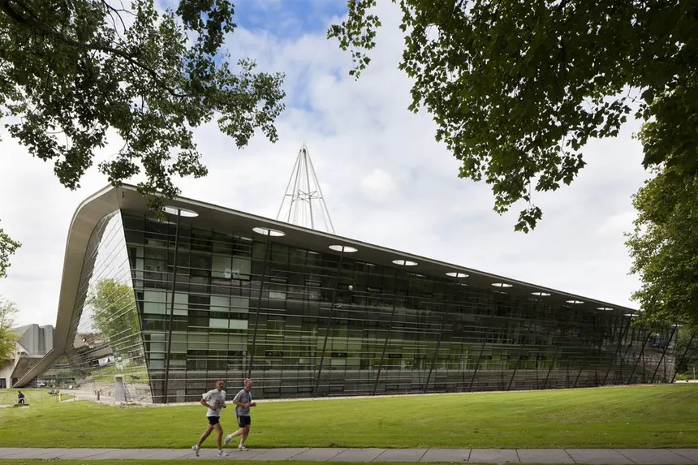
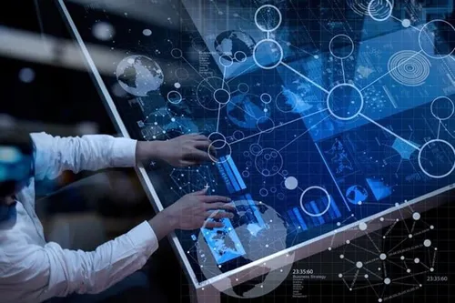

Tecnologia que transforma
A Faculdade Horizonte desenvolve cursos e projetos voltados para formação de profissionais preparados para os desafios da transformação digital.
O portal Horizonte Tech reúne informações sobre cursos, projetos acadêmicos, eventos, oportunidades e tendências relacionadas ao mercado de tecnologia.

Cursos da Área de Tecnologia
Curso 1 - Análise e Desenvolvimento de Sistemas: Formação voltada para análise, desenvolvimento e manutenção de sistemas computacionais.
Curso 2 - Ciência da Computação: Formação abrangente relacionada à computação, algoritmos, desenvolvimento de software e tecnologias computacionais.
Curso 3 - Redes de Computadores: Formação voltada para infraestrutura, comunicação de dados e administração de ambientes computacionais.
Curso 4 - Sistemas de Informação: Formação destinada ao desenvolvimento e utilização estratégica de sistemas de informação nas organizações.
Últimas Notícias
Notícia 1 - Inteligência Artificial ganha espaço nas empresas: Organizações de diferentes setores estão utilizando soluções baseadas em Inteligência Artificial para apoiar atividades, automatizar processos e analisar informações.

continuar leitura
Notícia 2 - Desenvolvimento Web continua crescendo: Aplicações web continuam sendo utilizadas por organizações para disponibilização de produtos, serviços e sistemas digitais.
continuar leitura
Notícia 3 - Segurança digital torna-se prioridade: A proteção de dados e sistemas tornou-se uma preocupação importante para organizações que dependem cada vez mais de ambientes digitais.
continuar leitura
Notícia 4 - Mercado busca novos profissionais de tecnologia: Empresas continuam buscando profissionais preparados para trabalhar com desenvolvimento, dados, infraestrutura e segurança.
continuar leitura
Tecnologias importantes para iniciar na área
- HTML
- CSS
- JavaScript
- Python
- Banco de Dados
Por onde começar?
Não existe apenas um caminho para entrar na área de tecnologia, mas alguns conhecimentos podem ajudar na construção de uma base inicial.
- Conhecer os fundamentos da computação
- Aprender lógica de programação
- Estudar HTML
- Estudar CSS
- Estudar JavaScript
- desenvolver Projetos
- Continuar estudando novas tecnologias
Próximos Eventos
Evento 1 - Introdução ao Desenvolvimento Web
Data: 28/08/2026
Encontro introdutório sobre desenvolvimento de páginas utilizando HTML.
Evento 2 - Semana de Inteligência Artificial
Data: 11/09/2026
Evento acadêmico voltado para discussão de conceitos e aplicações relacionadas à Inteligência Artificial.
Evento 3 - Encontro de Segurança da Informação
Data: 18/09/2026
Atividade acadêmica destinada à discussão sobre proteção de sistemas e informações.
Evento 4 - Mostra de Projetos de Tecnologia
Data: 02/10/2026
Apresentação de projetos desenvolvidos pelos estudantes dos cursos de tecnologia.
Oportunidades para estudantes
Monitoria: Estudantes poderão participar de processos de seleção para monitoria acadêmica.
Projetos de extensão: Projetos de extensão permitem que estudantes participem de atividades relacionadas à comunidade e à aplicação prática do conhecimento.
Pesquisa: Estudantes interessados poderão participar de projetos acadêmicos relacionados à pesquisa e inovação.
Eventos acadêmicos: Congressos, seminários e oficinas podem contribuir para o desenvolvimento profissional e acadêmico.
Conteúdos para acompanhar
Sobre o Portal Horizonte Tech
O Horizonte Tech é um portal acadêmico criado para divulgar conteúdos relacionados à tecnologia e às atividades desenvolvidas pela Faculdade Horizonte.
Missão: Compartilhar conhecimento e aproximar estudantes das diferentes áreas da tecnologia.
Visão: Tornar-se um espaço acadêmico de referência para divulgação de conhecimento tecnológico.